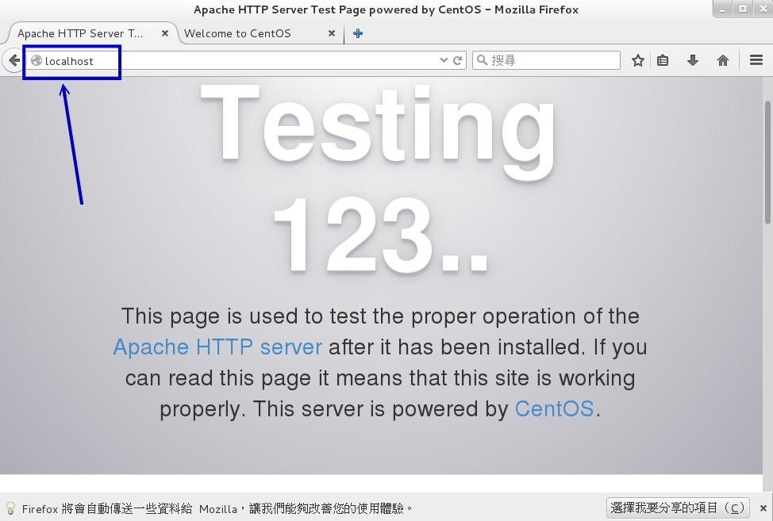

22.3 YUM 线上升级机制
我们在本章一开始的地方谈到过 yum 这玩意儿，这个 yum 是通过分析 RPM 的标头数据后， 根据各软件的相关性制作出属性相依时的解决方案，然后可以自动处理软件的相依属性问题，以解决软件安装或移除与升级的问题。 详细的 yum 服务器与用户端之间的沟通，可以再回到前面的部分查阅一下图 22.1.1 的说明。
由于 distribution 必须要先释出软件，然后将软件放置于 yum 服务器上面，以提供用户端来要求安装与升级之用的。 因此我们想要使用 yum 的功能时，必须要先找到适合的 yum server 才行啊！而每个 yum server 可能都会提供许多不同的软件功能，那就是我们之前谈到的“软件库”啦！因此，你必须要前往 yum server 查询到相关的软件库网址后，再继续处理后续的设置事宜。
事实上 CentOS 在释出软件时已经制作出多部映射站台 （mirror site） 提供全世界的软件更新之用。 所以，理论上我们不需要处理任何设置值，只要能够连上 Internet ，就可以使用 yum 啰！下面就让我们来玩玩看吧！
22.3.1 利用 yum 进行查询、安装、升级与移除功能
yum 的使用真是非常简单，就是通过 yum 这个指令啊！那么这个指令怎么用呢？用法很简单，就让我们来简单的谈谈：
- 查询功能：yum [list|info|search|provides|whatprovides] 参数
如果想要查询利用 yum 来查询原版 distribution 所提供的软件，或已知某软件的名称，想知道该软件的功能， 可以利用 yum 相关的参数为：
[root@study ~]# yum [option] [查询工作项目] [相关参数]
选项与参数：
[option]：主要的选项，包括有：
-y ：当 yum 要等待使用者输入时，这个选项可以自动提供 yes 的回应；
--installroot=/some/path ：将该软件安装在 /some/path 而不使用默认路径
[查询工作项目] [相关参数]：这方面的参数有：
search ：搜寻某个软件名称或者是描述 （description） 的重要关键字；
list ：列出目前 yum 所管理的所有的软件名称与版本，有点类似 rpm -qa；
info ：同上，不过有点类似 rpm -qai 的执行结果；
provides：从文件去搜寻软件！类似 rpm -qf 的功能！
范例一：搜寻磁盘阵列 （raid） 相关的软件有哪些？
[root@study ~]# yum search raid
Loaded plugins: fastestmirror, langpacks # yum 系统自己找出最近的 yum server
Loading mirror speeds from cached hostfile # 找出速度最快的那一部 yum server
* base: ftp.twaren.net # 下面三个软件库，且来源为该服务器！
* extras: ftp.twaren.net
* updates: ftp.twaren.net
....（前面省略）....
dmraid-events-logwatch.x86_64 : dmraid logwatch-based email reporting
dmraid-events.x86_64 : dmevent_tool （Device-mapper event tool） and DSO
iprutils.x86_64 : Utilities for the IBM Power Linux RAID adapters
mdadm.x86_64 : The mdadm program controls Linux md devices （software RAID arrays）
....（后面省略）....
# 在冒号 （:） 左边的是软件名称，右边的则是在 RPM 内的 name 设置 （软件名）
# 瞧！上面的结果，这不就是与 RAID 有关的软件吗？如果想了解 mdadm 的软件内容呢？
范例二：找出 mdadm 这个软件的功能为何
[root@study ~]# yum info mdadm
Installed Packages <==这说明该软件是已经安装的了
Name : mdadm <==这个软件的名称
Arch : x86_64 <==这个软件的编译架构
Version : 3.3.2 <==此软件的版本
Release : 2.el7 <==释出的版本
Size : 920 k <==此软件的文件总容量
Repo : installed <==软件库回报说已安装的
From repo : anaconda
Summary : The mdadm program controls Linux md devices （software RAID arrays）
URL : http://www.kernel.org/pub/linux/utils/raid/mdadm/
License : GPLv2+
Description : The mdadm program is used to create, manage, and monitor Linux MD （software
: RAID） devices. As such, it provides similar functionality to the raidtools
: package. However, mdadm is a single program, and it can perform
: almost all functions without a configuration file, though a configuration
: file can be used to help with some common tasks.
# 不要跟我说，上面说些啥？自己找字典翻一翻吧！拜托拜托！
范例三：列出 yum 服务器上面提供的所有软件名称
[root@study ~]# yum list
Installed Packages <==已安装软件
GConf2.x86_64 3.2.6-8.el7 @anaconda
LibRaw.x86_64 0.14.8-5.el7.20120830git98d925 @base
ModemManager.x86_64 1.1.0-6.git20130913.el7 @anaconda
....（中间省略）....
Available Packages <==还可以安装的其他软件
389-ds-base.x86_64 1.3.3.1-20.el7_1 updates
389-ds-base-devel.x86_64 1.3.3.1-20.el7_1 updates
389-ds-base-libs.x86_64 1.3.3.1-20.el7_1 updates
....（下面省略）....
# 上面提供的意义为：“ 软件名称 版本 在那个软件库内 ”
范例四：列出目前服务器上可供本机进行升级的软件有哪些？
[root@study ~]# yum list updates <==一定要是 updates 喔！
Updated Packages
NetworkManager.x86_64 1:1.0.0-16.git20150121.b4ea599c.el7_1 updates
NetworkManager-adsl.x86_64 1:1.0.0-16.git20150121.b4ea599c.el7_1 updates
....（下面省略）....
# 上面就列出在那个软件库内可以提供升级的软件与版本！
范例五：列出提供 passwd 这个文件的软件有哪些
[root@study ~]# yum provides passwd
passwd-0.79-4.el7.x86_64 : An utility for setting or changing passwords using PAM
Repo : base
passwd-0.79-4.el7.x86_64 : An utility for setting or changing passwords using PAM
Repo : @anaconda
# 找到啦！就是上面的这个软件提供了 passwd 这个程序！
通过上面的查询，你应该大致知道 yum 如何用在查询上面了吧？那么实际来应用一下：
例题：利用 yum 的功能，找出以 pam 为开头的软件名称有哪些？而其中尚未安装的又有哪些？答：可以通过如下的方法来查询：
[root@study ~]# yum list pam*
Installed Packages
pam.x86_64 1.1.8-12.el7 @anaconda
pam_krb5.x86_64 2.4.8-4.el7 @base
Available Packages <==下面则是“可升级”的或“未安装”的
pam.i686 1.1.8-12.el7_1.1 updates
pam.x86_64 1.1.8-12.el7_1.1 updates
pam-devel.i686 1.1.8-12.el7_1.1 updates
pam-devel.x86_64 1.1.8-12.el7_1.1 updates
pam_krb5.i686 2.4.8-4.el7 base
pam_pkcs11.i686 0.6.2-18.el7 base
pam_pkcs11.x86_64 0.6.2-18.el7 base
如上所示，所以可升级者有 pam 这两个软件，完全没有安装的则是 pam-devel 等其他几个软件啰！
- 安装/升级功能：yum [install|update] 软件
既然可以查询，那么安装与升级呢？很简单啦！就利用 install 与 update 这两项工作来处理即可喔！
[root@study ~]# yum [option] [安装与升级的工作项目] [相关参数]
选项与参数：
install ：后面接要安装的软件！
update ：后面接要升级的软件，若要整个系统都升级，就直接 update 即可
范例一：将前一个练习找到的未安装的 pam-devel 安装起来
[root@study ~]# yum install pam-devel
Loaded plugins: fastestmirror, langpacks # 首先的 5 行在找出最快的 yum server
Loading mirror speeds from cached hostfile
* base: ftp.twaren.net
* extras: ftp.twaren.net
* updates: ftp.twaren.net
Resolving Dependencies # 接下来先处理“属性相依”的软件问题
--> Running transaction check
---> Package pam-devel.x86_64 0:1.1.8-12.el7_1.1 will be installed
--> Processing Dependency: pam（x86-64） = 1.1.8-12.el7_1.1 for package: pam-devel-
1.1.8-12.el7_1.1.x86_64
--> Running transaction check
---> Package pam.x86_64 0:1.1.8-12.el7 will be updated
---> Package pam.x86_64 0:1.1.8-12.el7_1.1 will be an update
--> Finished Dependency Resolution
Dependencies Resolved
# 由上面的检查发现到 pam 这个软件也需要同步升级，这样才能够安装新版 pam-devel 喔！
# 至于下面则是一个总结的表格显示！
==========================================================================================
Package Arch Version Repository Size
==========================================================================================
Installing:
pam-devel x86_64 1.1.8-12.el7_1.1 updates 183 k
Updating for dependencies:
pam x86_64 1.1.8-12.el7_1.1 updates 714 k
Transaction Summary
==========================================================================================
Install 1 Package # 要安装的是一个软件
Upgrade （ 1 Dependent package） # 因为相依属性问题，需要额外加装一个软件！
Total size: 897 k
Total download size: 183 k # 总共需要下载的容量！
Is this ok [y/d/N]: y # 你得要自己决定是否要下载与安装！当然是 y 啊！
Downloading packages: # 开始下载啰！
warning: /var/cache/yum/x86_64/7/updates/packages/pam-devel-1.1.8-12.el7_1.1.x86_64.rpm:
Header V3 RSA/SHA256 Signature, key ID f4a80eb5: NOKEY
Public key for pam-devel-1.1.8-12.el7_1.1.x86_64.rpm is not installed
pam-devel-1.1.8-12.el7_1.1.x86_64.rpm | 183 kB 00:00:00
Retrieving key from file:///etc/pki/rpm-gpg/RPM-GPG-KEY-CentOS-7
Importing GPG key 0xF4A80EB5:
Userid : "CentOS-7 Key （CentOS 7 Official Signing Key） <security@centos.org>"
Fingerprint: 6341 ab27 53d7 8a78 a7c2 7bb1 24c6 a8a7 f4a8 0eb5
Package : centos-release-7-1.1503.el7.centos.2.8.x86_64 （@anaconda）
From : /etc/pki/rpm-gpg/RPM-GPG-KEY-CentOS-7
Is this ok [y/N]: y # 只有在第一次安装才会出现这个项目“确定要安装数码签章”才能继续！
Running transaction check
Running transaction test
Transaction test succeeded
Running transaction
Warning: RPMDB altered outside of yum.
Updating : pam-1.1.8-12.el7_1.1.x86_64 1/3
Installing : pam-devel-1.1.8-12.el7_1.1.x86_64 2/3
Cleanup : pam-1.1.8-12.el7.x86_64 3/3
Verifying : pam-1.1.8-12.el7_1.1.x86_64 1/3
Verifying : pam-devel-1.1.8-12.el7_1.1.x86_64 2/3
Verifying : pam-1.1.8-12.el7.x86_64 3/3
Installed:
pam-devel.x86_64 0:1.1.8-12.el7_1.1
Dependency Updated:
pam.x86_64 0:1.1.8-12.el7_1.1
Complete!
有没有很高兴啊！你不必知道软件在哪里，你不必手动下载软件，你也不必拿出原版光盘出来 mount 之后查询再安装！全部不需要，只要有了 yum 这个家伙，你的安装、升级再也不是什么难事！ 而且还能主动的进行软件的属性相依处理流程，如上所示，一口气帮我们处理好了所有事情！ 是不是很过瘾啊！而且整个动作完全免费！够酷吧！
- 移除功能：yum [remove] 软件
那能不能用 yum 移除软件呢？将刚刚的软件移除看看，会出现啥状况啊？
[root@study ~]# yum remove pam-devel
Loaded plugins: fastestmirror, langpacks
Resolving Dependencies <==同样的，先解决属性相依的问题
--> Running transaction check
---> Package pam-devel.x86_64 0:1.1.8-12.el7_1.1 will be erased
--> Finished Dependency Resolution
Dependencies Resolved
==========================================================================================
Package Arch Version Repository Size
==========================================================================================
Removing:
pam-devel x86_64 1.1.8-12.el7_1.1 @updates 528 k
Transaction Summary
==========================================================================================
Remove 1 Package # 还好！没有相依属性的问题，仅移除一个软件！
Installed size: 528 k
Is this ok [y/N]: y
Downloading packages:
Running transaction check
Running transaction test
Transaction test succeeded
Running transaction
Erasing : pam-devel-1.1.8-12.el7_1.1.x86_64 1/1
Verifying : pam-devel-1.1.8-12.el7_1.1.x86_64 1/1
Removed:
pam-devel.x86_64 0:1.1.8-12.el7_1.1
Complete!
连移除也这么简单！看来，似乎不需要 rpm 这个指令也能够快乐的安装所有的软件了！ 虽然是如此，但是 yum 毕竟是架构在 rpm 上面所发展起来的，所以，鸟哥认为你还是得需要了解 rpm 才行！不要学了 yum 之后就将 rpm 的功能忘记了呢！切记切记！
22.3.2 yum 的配置文件
虽然 yum 是你的主机能够连线上 Internet 就可以直接使用的，不过，由于 CentOS 的映射站台可能会选错， 举例来说，我们在台湾，但是 CentOS 的映射站台却选择到了大陆北京或者是日本去，有没有可能发生啊！ 有啊！鸟哥教学方面就常常发生这样的问题，要知道，我们连线到大陆或日本的速度是非常慢的呢！那怎办？ 当然就是手动的修改一下 yum 的配置文件就好啰！
在台湾，CentOS 的映射站台主要有高速网络中心与义守大学，鸟哥近来比较偏好高速网络中心， 似乎更新的速度比较快，而且连接台湾学术网络也非常快速哩！因此，鸟哥下面建议台湾的朋友使用高速网络中心的 ftp 主机资源来作为 yum 服务器来源喔！不过因为鸟哥也在崑大服务，崑大目前也加入了 CentOS 的映射站， 如果在昆山或台南地区，也能够选择崑大的 FTP 喔！目前高速网络中心与崑大对于 CentOS 所提供的相关网址如下：
如果你连接到上述的网址后，就会发现里面有一堆链接，那些链接就是这个 yum 服务器所提供的软件库了！ 所以高速网络中心也提供了 centosplus, cloud, extras, fasttrack, os, updates 等软件库，最好认的软件库就是 os （系统默认的软件） 与 updates （软件升级版本） 啰！由于鸟哥在我的测试用主机是利用 x86_64 的版本， 因此那个 os 再点进去就会得到如下的可提供安装的网址：
为什么在上述的网址内呢？有什么特色！最重要的特色就是那个“ repodata ”的目录！该目录就是分析 RPM 软件后所产生的软件属性相依数据放置处！因此，当你要找软件库所在网址时， 最重要的就是该网址下面一定要有个名为 repodata 的目录存在！那就是软件库的网址了！ 其他的软件库正确网址，就请各位看倌自行寻找一下喔！现在让我们修改配置文件吧！
[root@study ~]# vim /etc/yum.repos.d/CentOS-Base.repo
[base]
name=CentOS-$releasever - Base
mirrorlist=http://mirrorlist.centos.org/?release=$releasever&arch=$basearch&repo=os&infra=$infra
#baseurl=http://mirror.centos.org/centos/$releasever/os/$basearch/
gpgcheck=1
gpgkey=file:///etc/pki/rpm-gpg/RPM-GPG-KEY-CentOS-7
如上所示，鸟哥仅列出 base 这个软件库内容而已，其他的软件库内容请自行查阅啰！上面的数据需要注意的是：
[base]：代表软件库的名字！中括号一定要存在，里面的名称则可以随意取。但是不能有两个相同的软件库名称， 否则 yum 会不晓得该到哪里去找软件库相关软件清单文件。
name：只是说明一下这个软件库的意义而已，重要性不高！
mirrorlist=：列出这个软件库可以使用的映射站台，如果不想使用，可以注解到这行；
baseurl=：这个最重要，因为后面接的就是软件库的实际网址！ mirrorlist 是由 yum 程序自行去捉映射站台， baseurl 则是指定固定的一个软件库网址！我们刚刚找到的网址放到这里来啦！
enable=1：就是让这个软件库被启动。如果不想启动可以使用 enable=0 喔！
gpgcheck=1：还记得 RPM 的数码签章吗？这就是指定是否需要查阅 RPM 文件内的数码签章！
gpgkey=：就是数码签章的公钥档所在位置！使用默认值即可
了解这个配置文件之后，接下来让我们修改整个文件的内容，让我们这部主机可以直接使用高速网络中心的资源吧！ 修改的方式鸟哥仅列出 base 这个软件库项目而已，其他的项目请您自行依照上述的作法来处理即可！
[root@study ~]# vim /etc/yum.repos.d/CentOS-Base.repo
[base]
name=CentOS-$releasever - Base
baseurl=http://ftp.ksu.edu.tw/FTP/CentOS/7/os/x86_64/
gpgcheck=1
gpgkey=file:///etc/pki/rpm-gpg/RPM-GPG-KEY-CentOS-7
[updates]
name=CentOS-$releasever - Updates
baseurl=http://ftp.ksu.edu.tw/FTP/CentOS/7/updates/x86_64/
gpgcheck=1
gpgkey=file:///etc/pki/rpm-gpg/RPM-GPG-KEY-CentOS-7
[extras]
name=CentOS-$releasever - Extras
baseurl=http://ftp.ksu.edu.tw/FTP/CentOS/7/extras/x86_64/
gpgcheck=1
gpgkey=file:///etc/pki/rpm-gpg/RPM-GPG-KEY-CentOS-7
# 默认情况下，软件仓库仅有这三个有启用！所以鸟哥仅修改这三个软件库的 baseurl 而已喔！
接下来当然就是给它测试一下这些软件库是否正常的运行中啊！如何测试呢？再次使用 yum 即可啊！
范例一：列出目前 yum server 所使用的软件库有哪些？
[root@study ~]# yum repolist all
repo id repo name status
C7.0.1406-base/x86_64 CentOS-7.0.1406 - Base disabled
C7.0.1406-centosplus/x86_64 CentOS-7.0.1406 - CentOSPlus disabled
C7.0.1406-extras/x86_64 CentOS-7.0.1406 - Extras disabled
C7.0.1406-fasttrack/x86_64 CentOS-7.0.1406 - CentOSPlus disabled
C7.0.1406-updates/x86_64 CentOS-7.0.1406 - Updates disabled
base CentOS-7 - Base enabled: 8,652
base-debuginfo/x86_64 CentOS-7 - Debuginfo disabled
base-source/7 CentOS-7 - Base Sources disabled
centosplus/7/x86_64 CentOS-7 - Plus disabled
centosplus-source/7 CentOS-7 - Plus Sources disabled
cr/7/x86_64 CentOS-7 - cr disabled
extras CentOS-7 - Extras enabled: 181
extras-source/7 CentOS-7 - Extras Sources disabled
fasttrack/7/x86_64 CentOS-7 - fasttrack disabled
updates CentOS-7 - Updates enabled: 1,302
updates-source/7 CentOS-7 - Updates Sources disabled
repolist: 10,135
# 上面最右边有写 enabled 才是有启动的！由于 /etc/yum.repos.d/
# 有多个配置文件，所以你会发现还有其他的软件库存在。
- 修改软件库产生的问题与解决之道
由于我们是修改系统默认的配置文件，事实上，我们应该要在 /etc/yum.repos.d/ 下面新建一个文件， 该扩展名必须是 .repo 才行！但因为我们使用的是指定特定的映射站台，而不是其他软件开发商提供的软件库， 因此才修改系统默认配置文件。但是可能由于使用的软件库版本有新旧之分，你得要知道， yum 会先下载软件库的清单到本机的 /var/cache/yum 里面去！那我们修改了网址却没有修改软件库名称 （中括号内的文字）， 可能就会造成本机的清单与 yum 服务器的清单不同步，此时就会出现无法更新的问题了！
那怎么办啊？很简单，就清除掉本机上面的旧数据即可！需要手动处理吗？不需要的， 通过 yum 的 clean 项目来处理即可！
[root@study ~]# yum clean [packages|headers|all]
选项与参数：
packages：将已下载的软件文件删除
headers ：将下载的软件文件开始删除
all ：将所有软件库数据都删除！
范例一：删除已下载过的所有软件库的相关数据 （含软件本身与清单）
[root@study ~]# yum clean all
22.3.3 yum 的软件群组功能
通过 yum 来线上安装一个软件是非常的简单，但是，如果要安装的是一个大型专案呢？ 举例来说，鸟哥使用默认安装的方式安装了测试机，这部主机就只有 GNOME 这个窗口管理员， 那我如果想要安装 KDE 呢？难道需要重新安装？当然不需要，通过 yum的软件群组功能即可！ 来看看指令先：
[root@study ~]# yum [群组功能] [软件群组]
选项与参数：
grouplist ：列出所有可使用的“软件群组组”，例如 Development Tools 之类的；
groupinfo ：后面接 group_name，则可了解该 group 内含的所有软件名；
groupinstall：这个好用！可以安装一整组的软件群组，相当的不错用！
groupremove ：移除某个软件群组；
范例一：查阅目前软件库与本机上面的可用与安装过的软件群组有哪些？
[root@study ~]# yum grouplist
Installed environment groups: # 已经安装的系统环境软件群组
Development and Creative Workstation
Available environment groups: # 还可以安装的系统环境软件群组
Minimal Install
Compute Node
Infrastructure Server
File and Print Server
Basic Web Server
Virtualization Host
Server with GUI
GNOME Desktop
KDE Plasma Workspaces
Installed groups: # 已经安装的软件群组！
Development Tools
Available Groups: # 还能额外安装的软件群组！
Compatibility Libraries
Console Internet Tools
Graphical Administration Tools
Legacy UNIX Compatibility
Scientific Support
Security Tools
Smart Card Support
System Administration Tools
System Management
Done
你会发现系统上面的软件大多是群组的方式一口气来提供安装的！还记全新安装 CentOS 时， 不是可以选择所需要的软件吗？而那些软件不是利用 GNOME/KDE/X Window ... 之类的名称存在吗？ 其实那就是软件群组啰！如果你执行上述的指令后，在“Available Groups”下面应该会看到一个 “Scientific Support”的软件群组，想知道那是啥吗？就这样做：
[root@study ~]# yum groupinfo "Scientific Support"
Group: Scientific Support
Group-Id: scientific
Description: Tools for mathematical and scientific computations, and parallel computing.
Optional Packages:
atlas
fftw
fftw-devel
fftw-static
gnuplot
gsl-devel
lapack
mpich
....（以下省略）....
你会发现那就是一个科学运算、平行运算会用到的各种工具就是了！而下方则列出许多应该会在该群组安装时被下载与安装的软件们！ 让我们直接来安装看看！
[root@study ~]# yum groupinstall "Scientific Support"
正常情况下系统是会帮你安装好各项软件的。只是伤脑筋的是，刚刚好 Scientific Support 里面的软件都是“可选择的”！而不是“主要的 （mandatory）”， 因此默认情况下，上面这些软件通通不会帮你安装！！如果你想要安装上述的软件，可以使用 yum install atlas fftw .. 一个一个写进去安装～ 如果想要让 groupinstall 默认安装好所有的 optional 软件呢？那就得要修改配置文件！更改选 groupinstall 选择的软件项目即可！如下所示：
[root@study ~]# vim /etc/yum.conf
.....（前面省略）.....
distroverpkg=centos-release # 找到这一行，下面新增一行！
group_package_types=default, mandatory, optional
.....（下面省略）.....
[root@study ~]# yum groupinstall "Scientific Support"
你就会发现系统开始进行了一大堆软件的安装！那就是啦！这个 group 功能真是非常的方便呢！这个功能请一定要记下来，对你未来安装软件是非常有帮助的喔！ ^_^
22.3.4 EPEL/ELRepo 外挂软件以及自订配置文件
鸟哥因为工作的关系，在 Linux 上面经常需要安装第三方协力软件，这包括 NetCDF 以及 MPICH 等等的软件。现在由于平行处理的函数库需求大增， 所以 MPICH 已经纳入默认的 CentOS 7 软件库中。但是 NetCDF 这个软件就没有包含在里头了～同时，Linux 上面还有个很棒的统计软件，这个软件名称为“ R ”！ 默认也是不在 CentOS 的软件库内～唉～那怎办？要使用前一章介绍的 Tarball 去编译与安装吗？这倒不需要～因为有很多我们好棒的网友提供预先编译版本了！
在 Fedora 基金会里面发展了一个外加软件计划 （Extra Packages for Enterprise Linux, EPEL），这个计划主要是针对 Red Hat Enterprise Linux 的版本来开发的， 刚刚好 CentOS 也是针对 RHEL 的版本来处理的嘛！所以也就能够支持该软件库的相关软件相依环境了。这个计划的主网站在下面网页：
而我们的 CentOS 7 主要可以使用的软件仓库网址为：
除了上述的 Fedora 计划所提供的额外软件库之外，其实社群里面也有朋友针对 CentOS 与 EPEL 的不足而提供的许多软件仓库喔！ 下面鸟哥是列出当初鸟哥为了要处理 PCI passthrough 虚拟化而使用到的 ELRepo 这个软件仓库，若有其他的需求，你就得要自己搜寻了！ 这个 ELRepo 软件仓库与提供给 CentOS 7.x 的网址如下：
- http://elrepo.org/tiki/tiki-index.php
- http://elrepo.org/linux/elrepo/el7/x86_64
- http://elrepo.org/linux/kernel/el7/x86_64
这个 ELRepo 的软件库跟其他软件库比较不同的地方在于这个软件库提供的数据大多是与核心、核心模块与虚拟化相关软件有关，例如 NVidia 的驱动程序也在里面咧！ 尤其提供了最新的核心 （取名为 kernel-ml 的软件名称，其实就是最新的 Linux 核心啊！），如果你的系统像鸟哥的某些发展服务器一样，那就有可能会使用到这个软件库喔！
好了！根据上面的说明，来玩一玩下面这个仿真案例看看：
问：我的系统上面想要通过上述的 CentOS 7 的 EPEL 计划来安装 netcdf 以及 R 这两套软件，该如何处理？答：
首先，你的系统应该要针对 epel 进行 yum 的配置文件处理，处理方式如下：
|
[root@study ~]# vim /etc/yum.repos.d/epel.repo [epel] name = epel packages baseurl = https://dl.fedoraproject.org/pub/epel/7/x86_64/ gpgcheck = 0 enabled = 0|
鸟哥故意不要启动这个软件仓库，只是未来有需要的时候才进行安装，默认不要去找这个软件库！
接下来使用这个软件库来进行安装 netcdf 与 R 的行为喔！
|
[root@study ~]# yum --enablerepo=epel install netcdf R|
这样就可以安装起来了！未来你没有加上 --enablerepo=epel 时，这个 EPEL 的软件并不会更新喔！
- 使用本机的原版光盘
万一你的主机并没有网络，但是你却有很多软件安装的需求～假设你的系统也都还没有任何升级的动作过， 这个时候我能不能用本机的光盘来作为主要的软件来源呢？答案当然是可以啊！那要怎么做呢？ 很简单，将你的光盘挂载到某个目录，我们这里还是继续假设在 /mnt 好了，然后设置如下的 yum 配置文件：
[root@study ~]# vim /etc/yum.repos.d/cdrom.repo
[mycdrom]
name = mycdrom
baseurl = file:///mnt
gpgcheck = 0
enabled = 0
[root@study ~]# yum --enablerepo=mycdrom install software_name
这个设置功能在你没有网络但是却需要解决很多软件相依性的状况时，相当好用啊！
22.3.5 全系统自动升级
我们可以手动选择是否需要升级，那能不能让系统自动升级，让我们的系统随时保持在最新的状态呢？ 当然可以啊！通过“ yum -y update ”来自动升级，那个 -y 很重要，因为可以自动回答 yes 来开始下载与安装！ 然后再通过 crontab 的功能来处理即可！假设我每天在台湾时间 3:00am 网络带宽比较轻松的时候进行升级， 你可以这样做的：
[root@study ~]# echo '10 1 * * * root /usr/bin/yum -y --enablerepo=epel update' > /etc/cron.d/yumupdate
[root@study ~]# vim /etc/crontab
从此你的系统就会自动升级啦！很棒吧！此外，你还是得要分析登录文件与收集 root 的信件的， 因为如果升级的是核心软件 （kernel），那么你还是得要重新开机才会让安装的软件顺利运行的！ 所以还是得分析登录文件，若有新核心安装，就重新开机，否则就让系统自动维持在最新较安全的环境吧！ 真是轻松愉快的管理啊！
22.3.6 管理的抉择：RPM 还是 Tarball
这一直是个有趣的问题：“如果我要升级的话，或者是全新安装一个新的软件， 那么该选择 RPM 还是 Tarball 来安装呢？”，事实上考虑的因素很多，不过鸟哥通常是这样建议的：
优先选择原厂的 RPM 功能：
由于原厂释出的软件通常具有一段时间的维护期，举例来说， RHEL 与 CentOS 每一个版本至少提供五年以上的更新期限。这对于我们的系统安全性来说，实在是非常好的选项！ 何解？既然 yum 可以自动升级，加上原厂会持续维护软件更新，那么我们的系统就能够自己保持在软件最新的状态， 对于资安来说当然会比较好一些的！ 此外，由于 RPM 与 yum 具有容易安装/移除/升级等特点，且还提供查询与验证的功能，安装时更有数码签章的保护， 让你的软件管理变的更轻松自在！因此，当然首选就是利用 RPM 来处理啦！
选择软件官网释出的 RPM 或者是提供的软件库网址：
不过，原厂并不会包山包海，因此某些特殊软件你的原版厂商并不会提供的！举例来说 CentOS 就没有提供 NTFS 的相关模块。此时你可以自行到官网去查阅，看看有没有提供相对到你的系统的 RPM 文件， 如果有提供软件库网址，那就更好啦！可以修改 yum 配置文件来加入该软件库，就能够自动安装与升级该软件！ 你说方不方便啊！
利用 Tarball 安装特殊软件：
某些特殊用途的软件并不会特别帮你制作 RPM 文件的，此时建议你也不要妄想自行制作 SRPM 来转成 RPM 啦！ 因为你只有区区一部主机而已，若是你要管理相同的 100 部主机，那么将源代码转制作成 RPM 就有价值！ 单机版的特殊软件，例如学术网络常会用到的 MPICH/PVM 等平行运算函数库，这种软件建议使用 tarball 来安装即可， 不需要特别去搜寻 RPM 啰！
用 Tarball 测试新版软件：
某些时刻你可能需要使用到新版的某个软件，但是原版厂商仅提供旧版软件，举例来说，我们的 CentOS 主要是定位于企业版，因此很多软件的要求是“稳”而不是“新”，但你就是需要新软件啊！ 然后又担心新软件装好后产生问题，回不到旧软件，那就惨了！此时你可以用 tarball 安装新软件到 /usr/local 下面， 那么该软件就能够同时安装两个版本在系统上面了！而且大多数软件安装数种版本时还不会互相干扰的！ 嘿嘿！用来作为测试新软件是很不错的呦！只是你就得要知道你使用的指令是新版软件还是旧版软件了！
所以说，RPM 与 Tarball 各有其优缺点，不过，如果有 RPM 的话，那么优先权还是在于 RPM 安装上面，毕竟管理上比较便利，但是如果软件的架构差异性太大， 或者是无法解决相依属性的问题，那么与其花大把的时间与精力在解决属性相依的问题上，还不如直接以 tarball 来安装，轻松又惬意！
22.3.7 基础服务管理：以 Apache 为例
我们在 17 章谈到 systemd 的服务管理，那个时候仅使用 vsftpd 这个比较简单的服务来做个说明，那是因为还没有谈到 yum 这个东东的缘故。 现在，我们已经处理好了网络问题 （20 章的内容），这个 yum 也能够顺利的使用！那么有没有其他的服务可以拿来做个测试呢？有的，我们就拿网站服务器来说明吧！
一般来说， WWW 网站服务器需要的有 WWW 服务器软件 + 网页程序语言 + 数据库系统 + 程序语言与数据库的链接软件等等，在 CentOS 上面， 我们需要的软件就有“ httpd + php + mariadb-server + php-mysql ”这些软件。不过我们默认仅要启用 httpd 而已，因此等一下虽然上面的软件都要安装， 不过仅有 httpd 默认要启动而已喔！
另外，在默认的情况下，你无须修改服务的配置文件，都通过系统默认值来处理你的服务即可！那么有个江湖口诀你可以将它背下来～ 让你在处理服务的时候就不会掉漆了～
- 安装： yum install （你的软件）
- 启动： systemctl start （你的软件）
- 开机启动： systemctl enable （你的软件）
- 防火墙： firewall-cmd --add-service="（你的服务）"; firewall-cmd --permanent --add-service="（你的服务）"
- 测试： 用软件去查阅你的服务正常与否～
下面就让我们一步一步来实验吧！
# 0\. 先检查一下有哪些软件没有安装或已安装～这个不太需要进行～单纯是鸟哥比较龟毛要先查看看而已！
[root@study ~]# rpm -q httpd php mariadb-server php-mysql
httpd-2.4.6-31.el7.centos.1.x86_64 # 只有这个安装好了，下面三个都没装！
package php is not installed
package mariadb-server is not installed
package php-mysql is not installed
# 1\. 安装所需要的软件！
[root@study ~]# yum install httpd php mariadb-server php-mysql
# 当然，大前提是你的网络没问题！这样就可以直接线上安装或升级！
# 2\. 3\. 启动与开机启动，这两个步骤要记得一定得进行！
[root@study ~]# systemctl daemon-reload
[root@study ~]# systemctl start httpd
[root@study ~]# systemctl enable httpd
[root@study ~]# systemctl status httpd
httpd.service - The Apache HTTP Server
Loaded: loaded （/usr/lib/systemd/system/httpd.service; enabled）
Active: active （running） since Wed 2015-09-09 16:52:04 CST; 9s ago
Main PID: 8837 （httpd）
Status: "Total requests: 0; Current requests/sec: 0; Current traffic: 0 B/sec"
CGroup: /system.slice/httpd.service
├─8837 /usr/sbin/httpd -DFOREGROUND
# 4\. 防火墙
[root@study ~]# firewall-cmd --add-service="http"
[root@study ~]# firewall-cmd --permanent --add-service="http"
[root@study ~]# firewall-cmd --list-all
public （default, active）
interfaces: eth0
sources:
services: dhcpv6-client ftp http https ssh # 这个是否有启动才是重点！
ports: 222/tcp 555/tcp
masquerade: no
forward-ports:
icmp-blocks:
rich rules:
rule family="ipv4" source address="192.168.1.0/24" accept
在最后的测试中，进入图形界面，打开你的浏览器，在网址列输入“ http://localhost ”就会出现如下的画面！ 那就代表成功了！你的 Linux 已经是 Web server 啰！就是这么简单！
图22.3.1、服务创建的第五步骤，测试一下有没有成功！